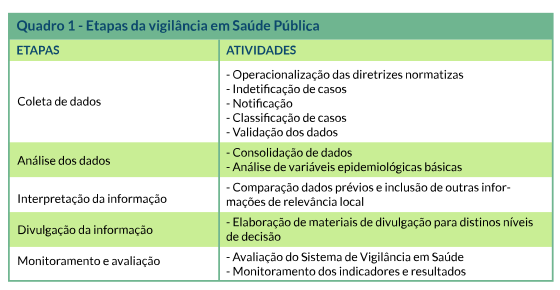

<div class="largura-1_1">
    
</div>
<div class="coluna-esquerda largura-1_1 "
    style="display: flex;height: 380px;align-items: center;justify-content: center;flex-direction: column;">
    <p>Para fins didáticos, podemos considerar que o ciclo de vigilância é composto de cinco etapas, sendo:</p>
    
</div>
<footer style="padding: 0; height: 40px;">
    
</footer>